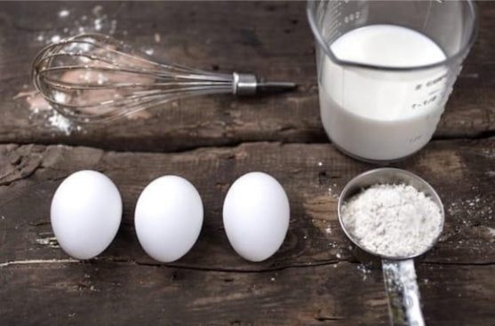

Welcome to the ultimate guide for making mini chocolate chip cookies! These bite-sized treats are perfect for satisfying your sweet tooth without overindulging. Follow this simple recipe to create delicious, crispy-on-the-outside, chewy-on-the- inside mini chocolate chip cookies that everyone will love.
